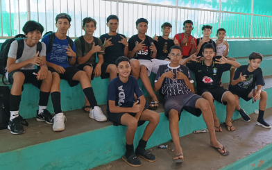

No campeonato INTERESCOLAR, a equipe do colégio Orminda Guimarães Cotrim obteve uma vitória impressionante contra o time de Isaías. O jogo terminou com um placar de 4-0, destacando o desempenho dominante do time da Orminda. A partida foi marcada por jogadas bem coordenadas.
